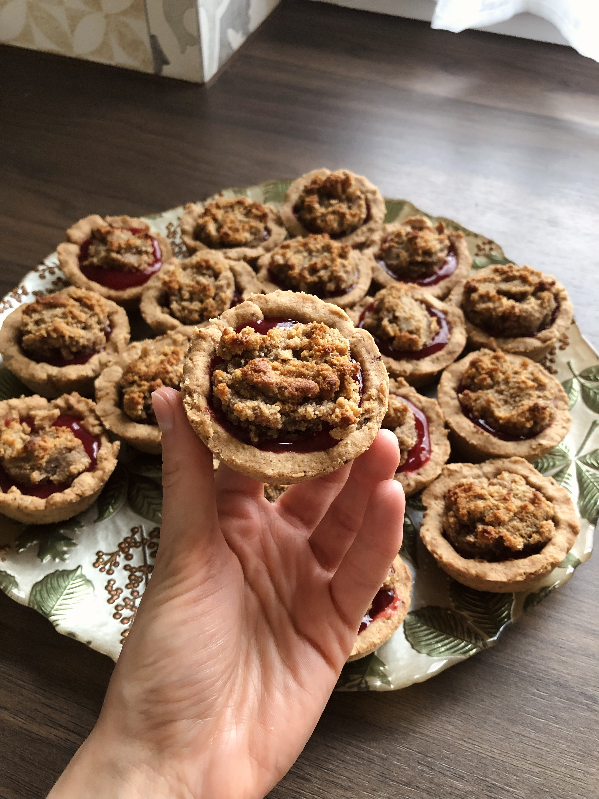

Ciasteczka
Tartaletki z orzechami laskowymi i malinami
Połączenie smaku lata i jesieni.

Składniki
Kruche
- 300 g mąki pszennej
- 150 g zimnego masła
- 2 żółtka
- Szczypta soli
- 60 g cukru
- 2-3 łyżki ceremonialnego kakao
Nadzienie orzechowe
- 200 g podprażonych orzechów laskowych
- 80 ml śmietany kremówki
- 2 łyżki miodu
- 40 ml rumu
Malinowa frużelina
- 500 g malin
- 90 g cukru
- 15 ml soku z cytryny
- 1 płaska łyżka skrobi ziemniaczanej+ 25 ml zimnej wody
- 1 płaska łyżeczka żelatyny+ 15 ml zimnej wody
Przygotowanie
- Mąkę przesiać, dodać zimne masło i posiekać nożem do połączenia. Dodać żółtka, cukier, sól oraz starte kakao. Szybko zagnieść, owinąć folią i schłodzić w lodówce przez ok. 1 godzinę.
- Podprażone i wystudzone orzechy laskowe otrzeć w dłoniach ze skórki, zmielić lub zblendować, wymieszać ze śmietaną, miodem oraz rumem. Przykryć folią i schłodzić w lodówce.
- Maliny podgrzać w rondelki z cukrem i sokiem z cytryny. Przetrzeć jeszcze ciepłe przez drobne sito, aby pozbyć się pestek. Powstały mus podgrzać. Skrobię wymieszać z zimną wodą, dodać do malin i mieszać 30-60 sekund do zgęstnienia. Mus zdjąć z ognia. Żelatynę wymieszać z zimną wodą i po chwili dodać do musu. Wymieszać dokładnie i wystudzić, a następnie schłodzić w lodówce.
- Schłodzone ciasto rozwałkować do ok. 3 mm, wykrawać koła szklanką i wykładać je na posmarowaną masłem i wysypaną mąką formę do muffinek. Do tak przygotowanych tartaletek nakładać orzechowe nadzienie (około 1 pełna łyżeczka). Całość owinąć folią i włożyć na około 20 minut do lodówki. W tym czasie rozgrzewać piekarnik do 180 stopni (tryb góra-dół). Po schłodzeniu tartaletek, włożyć je do piekarnika na 17-20 minut.
- Upieczone tartaletki pozostawić w formie do momentu jej wystygnięcia, następnie wyciągnąć je i studzić na kratce lub talerzu. Gdy całkowicie wystygną można delikatnie wyjmować nadzienie łyżeczką, na jego miejsce dawać około 1 łyżeczkę frużeliny, a następnie kłaść na nią podpieczone nadzienie. Tak przygotowane tartaletki przechowywać w lodówce, w szczelnie zamkniętym pojemniku.